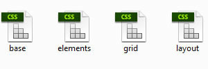
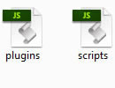

The template uses 4 main CSS stylesheets:

The stylesheets are:
The other css file alternative-header.css if only used on the alternative header page and modifies the default header and menu styling.
The template make use of the GOOGLE FONTS service to implement non-standard fonts.
Google Web Fonts is a completely free and super easy way to implement non-standard fonts on your website in a properly licensed and widely supported fashion.
The fonts used is Open Sans.
You can look it up on the google fonts website using search and then click "Quick-Use" to learn detailed info about how to use it.Quick usage tips
This template uses icon fonts for delivering iconography on the website. The advantage icon fonts have over over image files ( .jpg / .png ) is that they provide scalable vector icons that can instantly be customized — size, color, drop shadow, and anything that can be done with the power of CSS.
The template comes with 2 icon fonts:
Go to the Font awesome website ( http://fortawesome.github.io/Font-Awesome/icons/) and choose a icon and it will take you to a preview page where it provides sample code.
Open the Custom icon font samples file and choose a icon you like and copy it's name.
The styling for the typography of the website is defined in base.css
All commonly used html elements are styled: headers, paragraphs, lists, tables, blockquotes etc.
Also there are a lot of helper clases created to help you create pages faster.
| Class | Description | Usage |
|---|---|---|
.hr |
creates an divided | <div class="hr"></div> |
.text-left |
text-align:left | |
.text-center |
text-align:center | |
.text-right |
text-align:right | |
.text-highlight |
Highlights a section of text | suspendisse <span class="text-highlight">sed diam libero</span> vel |
.text-uppercase |
text-transform:uppercase | |
.mute |
changes color to a muted grey | |
.last |
Removes margin bottom when applied to <address>, <p>, <ul>, <ol>, <h1>.. <h6> |
<p class="last"> .... |
.img-align-left |
align image left | |
.img-align-right |
align image right | |
.radio |
used to help styleing of radio inputs |
<label
|
.checkbox |
used to style checkbox inputs |
<label
|
The layout is defined in grid.css
The layout of the website is built on a simple 12 column grid, with a margin between the columns.
The framework supports a handful of media queries in a single file to help make your projects more appropriate on different devices and screen resolutions. Here's what's included:
| Label | Layout width | Column width | Gutter width |
|---|---|---|---|
| Large display | 1400px and up | 70px | 30px |
| Default | 980px and up | 60px | 20px |
| Portrait tablets | 768px and above | 45px | 15px |
| Phones | 767px and below | Fluid columns, no fixed widths | |
For a simple two column layout, create a .row and add the appropriate number
of .span* columns. As this is a 12-column grid, each .span* spans a number
of those 12 columns, and should always add up to 12 for each row (or the number of columns in the parent).
Given this example, we have .span3 and .span9, making for 12 total columns and a complete row.
To nest your content with the default grid, add a new .row and set of .span* columns within an
existing .span* column. Nested rows should include a set of columns that add up to the number of columns of
its parent.
For faster mobile-friendly development, use these utility classes for showing and hiding content by device. Below is a table of the available classes and their effect on a given media query layout.
| Class | Phones 767px and below | Tablets 979px to 768px | Desktops Default |
|---|---|---|---|
.visible-phone |
Visible | Hidden | Hidden |
.visible-tablet |
Hidden | Visible | Hidden |
.visible-desktop |
Hidden | Hidden | Visible |
.hidden-phone |
Hidden | Visible | Visible |
.hidden-tablet |
Visible | Hidden | Visible |
.hidden-desktop |
Visible | Visible | Hidden |
Use on a limited basis and avoid creating entirely different versions of the same site. Instead, use them to complement each device's presentation. Responsive utilities should not be used with tables, and as such are not supported.
| Class | Description | Usage |
|---|---|---|
.float-left |
align content left | <div class="float-left"> ... </div> |
.float-right |
align content right | <div class="float-right"> ... </div> |
| Responsive inputs | make <input>, <select> and <textarea> element's widths respond to the grid |
Apply the grid classes .span1 .. span12 to them |
Seeing how you website will be responsive there will be times when you will need your images to be
responsive to and with this in mind I've made a nice little style to make any image 100% responsive,
all you need to do is add this little class to your image: class="responsive-img".
Note 1: The max-width:100%; hack for responsive images has been already added directly to
the slider, portfolio, services and page header classes so you don't have to add the
.responsive-img class to the images inside them.
Note 2: For more info on max-width:100%; and responsive images read http://unstoppablerobotninja.com/entry/fluid-images
There are 2 classes for clearing content:
.fixed - implements a clearfix hack and should be applied to elements ( eg. div's)
that have floated elements in them. The .row class used in the layout already has the
clearfix applyed so you don't need to add the .fixed class to element that already have the .row class applyed.clear - clear:both.To make it easier to skin the template we included skin css files with the templates. These files contain all the css
rules related strictly to colors and background colors and images. They can be found in the /_layout/css/skins folder.
The Template template has a default skin - default.css. To create new ones just rename this file and change color values in it and
then link to it in the html pages just under the Template CSS stylesheets. It also comes with 4 other predefined color schemes:
The template uses the jQuery javascript framework + jQuery plugins to add functionality to the website.
The javascript files are added at the end of each page, just above the </body> closing tag. The Css files that the plugins may require can be found in the <head>. Doing so optimises page loading.
Then two custom Js files are loaded:

The documentation for the revolution slider can be found here.
To make animations possible we use: CSS 3 animations - http://daneden.github.io/animate.css/
To animate an element on a page just add the .animate class to it.
The animation delay, style, speed etc. can be configured through data attributes:
data-animation - should be one of the animation names from http://daneden.github.io/animate.css/.data-animation-delay - should be a numeric value in milisecondsdata-animation-speed - should be a numeric value in milisecondsThe template uses bxSlider for general sliders and carousels.
The documentation for the revolution slider can be found here.
The template uses the Magnific Popup lightbox plugin.
If you want to get a link to open in the lightbox just add the .magnificPopup
class to it for a single image lightbox or .magnificPopup-gallery for a lightbox
in which you can go through the pictures in a gallery fashion.
The filtering on the portfolio is done with Isotope 2.
To add a new filtering options just:
The main menu is created using the Superfish jQuery Menu plugin.
The menu supports a combination of dropdown and megamenu sections.
On devices with a resolution <979px the menu is hidden and a mobile menu appears. The mobile menu is generated from the main menu automatically using javascript so you don't need to worry about it. There is a trigger that toggles the mobile menu and it is hidden by default and only shown on resolutions <979px.
To create a section with a parallax background all you need is to add the .fullwidth-section and .parallax classes to a div and a background image to it either with inline css or add it through another class.
gMap is a jQuery plugin that helps you embed Google Maps into your website. With less than 2 KB (minified and gzipped) in size it is very flexible and highly customizable. Read the full gMap 2 documentation.
To make the contact script work you just have to go in the send.php
file located in _layout/php/ and
change in the line below the email adress with your own.
The way the email works is that the contact.html file calls through ajax the send.php file ( if the inputs are properly filled out) it is processed and the result is returned to the contact.html page and placed in <div id="formstatus"></div>. So you must have it loaded on a server with php enabled to get it to work otherwise it will return the php code.
If the mail is succesfully sent then the contact form is cleared.
Flickr photos are added through a flickr badge. You can generate one on the flickr website or just change the photo set used by the current one.
The template uses Twitter Post Fetcher - to display tweets without using the 1.1 twitter API.
Twitter Post Fetcher Makes use of the over bloated widgets Twitter gives us to put on our sites, cuts out all the nonsense (and non semantic markup), and returns to you your raw tweet text so you can do with it as you please and style it how you want on your own website.
How to use it:
inside twitterfetcher.js
in the html where you want the twitter feed
Video backgrounds are added using the YTPlayer script for youtube video.
There are also local videos used as well.
In order to understand the html and css in the template you must be familiar with the following concepts:
Firebug integrates with Firefox to put a wealth of web development tools at your fingertips while you browse. You can edit, debug, and monitor CSS, HTML, and JavaScript live in any web page.
If you are using Firefox, Firebug should prove to be a great asset while editing the template, as you could use if to select elements on the page, find out what css they use and do changes on the fly to see how they would look. Also you could use the console to see eventual errors.
For more info on Firebug and it's usage visit https://getfirebug.com/.
Often problems with the templates are due to coding errors made while edting them. So I highly recommend you run your html files through the W3C Markup Validation Service and your CSS files through the W3C CSS Validation Service once you are done editing them.
The tool I use for page speed optimisation is Google's Page Speed Insights.
Run your website through it and it will pinpoint problems and suggest fixes.
If you need to compress images try the Windows and Mac OS application PNG Gauntlet.
If you need help with Search Engine Optimization I recommend you:
The list of credits can be found in the credits.txt file.